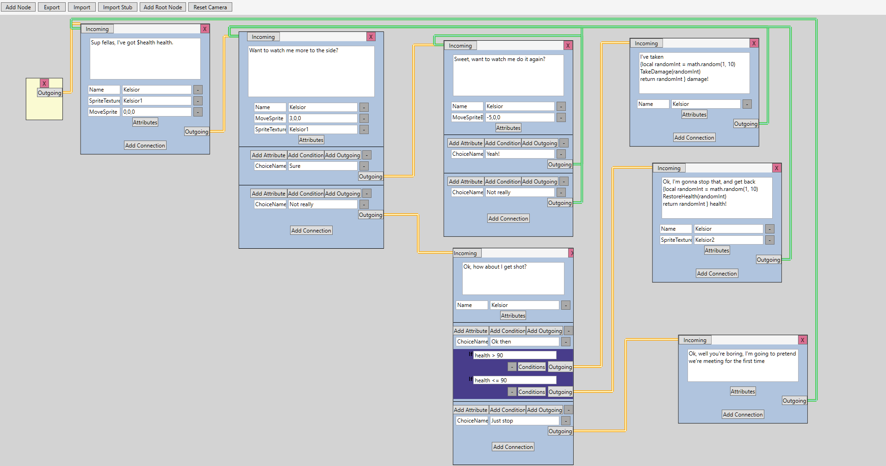
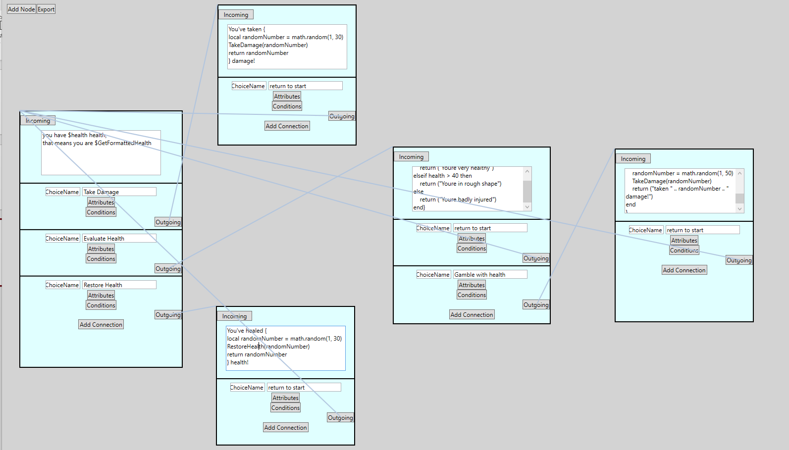
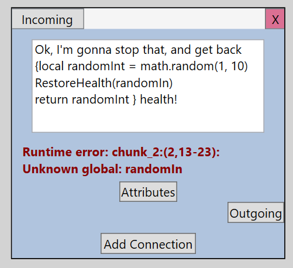
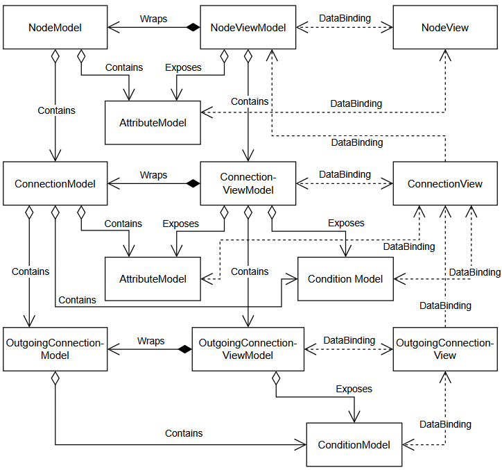

For my honours stage project, I created a node-based dialogue creation tool with built-in Lua scripting. The aim of the software was to provide a flexible system for creating game dialogue that could support a wide range of developer requirements while remaining game-engine agnostic.
The tool provides multiple types of conditions and attributes that can be connected to hooks in the end application, allowing developers to extend the system to suit their specific needs. This places the majority of dialogue authoring and branching narrative design away from the developer, and allows a writer who doesn't have technical experiance to meaningfully interact with the game. The resulting dialogue file can then be interpreted by any game engine with a compatible interpreter.
I wrote alot about this project, you can read about it here:
I also created an interpreter that allows the dialogue files produced by the editor to be used within Unity. As most of the interpreter is written in C# and is independent of Unity's APIs, it can be relatively easily adapted to other C#-based game engines.
The interpreter allows developers to expose their own functions to Lua scripts written within the editor. These functions are also exported as stubs for the editor, providing an accurate representation of the functions available in the target game and allowing the editor to perform error checking on Lua scripts before they are used in-game.
Some screenshots of the project in development



